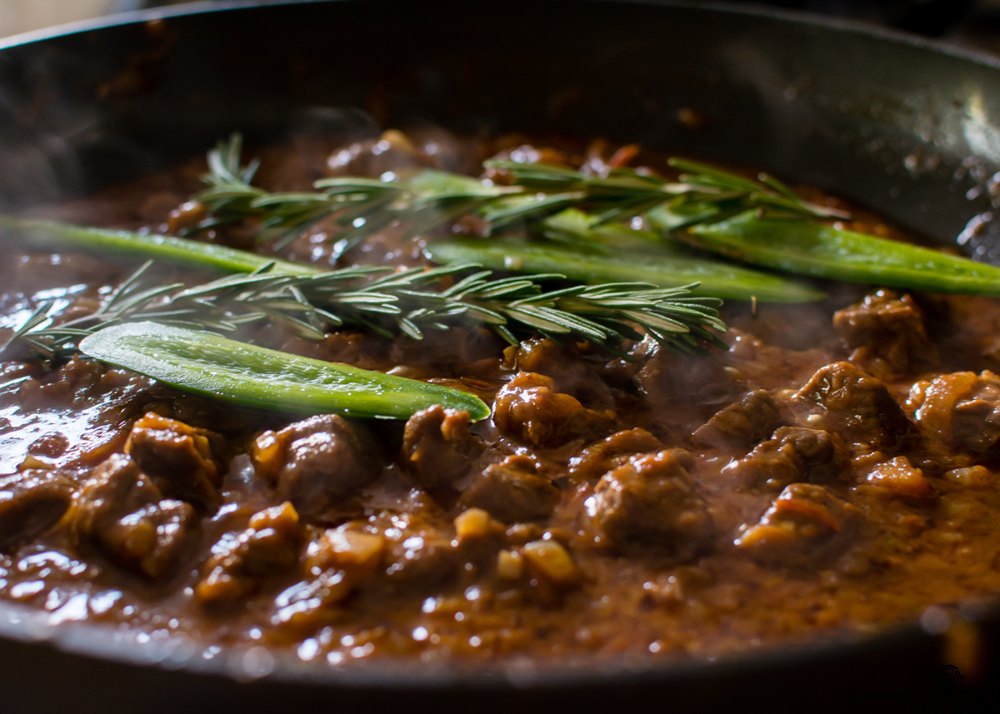

Tibs

Description
Meat along with vegetables are sautéed to make tibs (also tebs, t'ibs, tibbs, etc., Ge'ez: ጥብስ ṭïbs). Tibs is served in a variety of manners, and can range from hot to mild or contain little to no vegetables. There are many variations of the delicacy, depending on type, size or shape of the cuts of meat used. Beef, mutton, and goat are the most common meats used in the preparation of tibs.
Ingredients
- 2 Tbsp vegetable oil
- 1 and a half cups medium yellow onion, finely chopped
- 2 garlic cloves
- 1 and a half Tbsp berbere
- 2 Tbsp water
- 2 Roma tomatoes, diced
- 1 lb beef
- 1 tsp iodine salt
- 3 sprigs fresh rosemary
Steps
- In a nonstick skillet heat oil over high heat. When the oil easily slides across the pan, add the onions and garlic. Cook for about 4 minutes until the onions become translucent. Stir often so the garlic doesn’t burn.
- Add tomatoes and cook for another 3 minutes, stirring occasionally.
- Sprinkle with berbere and 2 tablespoons of water reduce the heat to medium-high and cook for 5 more minutes, stirring often.
- Add beef and mix well until the meat cubes are well coated with gravy. Reduce the heat to medium and cook for 15-20 minutes or until the meat is well cooked.If the gravy is too thick you can add another tablespoon of water.
- Add salt, jalapenos, and rosemary. Give it a last stir and let it cook for 3 more minutes. Taste and adjust seasoning. If the gravy isn't spicy enough you can add more berbere.
- Serve beef tibs on injera bread with a side of Misir Wot (Ethiopian lentils) and gomen
Home Page